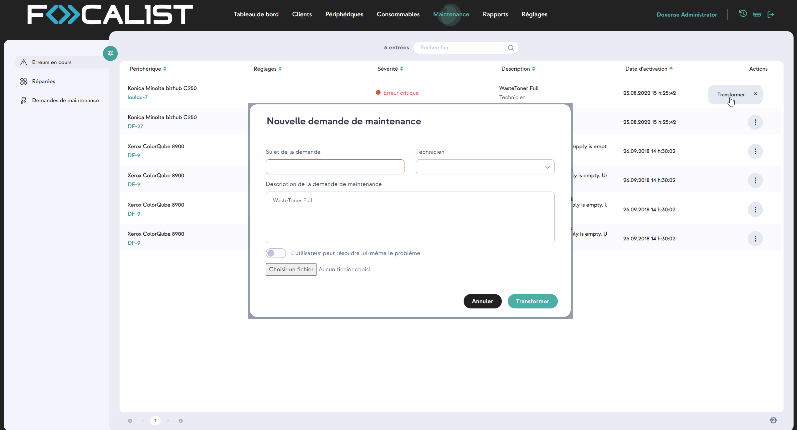
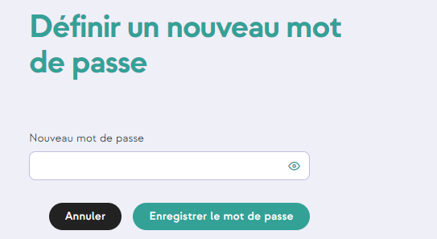

Maintenance
Erreurs en cours
Vous y trouverez une liste qui contient des informations sur les erreurs et les défaillances détectées qui sont directement liées au périphérique. Qui n’a pas encore été traitée. Les erreurs qui apparaissent à cet endroit sont générées automatiquement par l’application. Elles sont désignées sous le nom d’alertes SNMP.
Sous la colonne Description, il y a un message qui contient deux parties. L’une d’elles comprend les informations sur le problème qui proviennent du périphérique. L’autre concerne le degré de complexité du problème, qui est divisé en deux catégories :
-
non formé - intervention d’un membre du personnel formé non requise
-
formé - intervention d’un technicien requise
-
ingénieur - intervention d’un dépanneur requise
Dans l’onglet Erreurs en cours vous pouvez désigner une personne pour s’occuper d’un problème en cliquant sur le bouton d’action « Transformer » :

L’Ingénieur est la personne responsable du client chez lequel le périphérique est installé et exerce le rôle d’ingénieur.
Réparées
Comme pour les erreurs actives ci-dessus, les erreurs réparées sont également envoyées automatiquement par les périphériques, également sous forme d’alertes SNMP. Nous les présentons tous dans cette section.
Demande de maintenance
Les erreurs actives peuvent être transformées en demandes de maintenance, il est recommandé de le faire pour les erreurs plus complexes nécessitant l’intervention d’un technicien ou d’un ingénieur. Cette fonction présente l’avantage de pouvoir suivre précisément l’erreur, son statut actuel et d’ajouter des commentaires sur un problème particulier.
Il existe cinq statuts d’erreur qui sont les suivants :
-
Non résolue - nouvelle demande, pour commencer à la traiter, sélectionnez « Démarrer la demande » dans les boutons d’action.
-
En cours - demande d’erreur en cours de traitement.
-
Terminée - le problème a été résolu par le travailleur.
-
Résolue - l’administrateur confirme que les tâches ont été correctement résolues.
-
Rejetée - l’administrateur rejette la tâche.
Réinitialisation du mot de passe
-
Pour réinitialiser le mot de passe de votre compte, cliquez sur le lien suivant : Définir un nouveau mot de passe.
-
saisissez votre nouveau mot de passe dans le champ dédié :

- cliquez sur Enregistrer le nouveau mot de passe ou Annuler si vous ne souhaitez pas modifier le mot de passe existant.